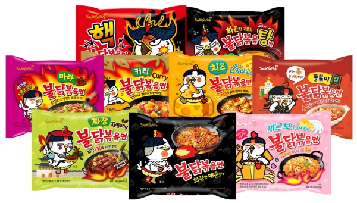
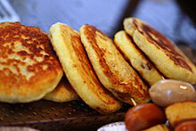

'K푸드의 세계화'를 이야기하면서 삼양식품의 불닭 브랜드도 빼놓을 수 없다. 삼양식품의 불닭브랜드 누적 매출은 지난해를 기준으로 1조원을 돌파했다. 누적 판매량은 18억개로, 전 세계인 약 4명 중 1명은 불닭볶음면을 먹은 셈이다. 불닭브랜드는 특히 수출 증가세가 두드러졌다. 삼양식품에 따르면 2012년 4월 출시 이후 연간 75억원에 불과했던 불닭브랜드 매출은 2016년 1000억원을 넘어섰고, 2018년에는 2825억원에 달했다. 2012년 1억원에 못 미쳤던 수출은 매년 세 자릿수 성장률을 기록하며 2017년부터는 내수 판매를 앞질렀다. 불닭브랜드가 글로벌화될 수 있었던 성공 요인으로는 '중독적인 매운맛'과 '다양한 확장 라인업'이 꼽힌다. 1년간 매운 소스 2톤, 닭 1200마리를 투입해 만든 불닭볶음면은 중독성 강한 매운맛으로 입소문을 타며 빠르게 알려졌다. 이후 유튜브 등 소셜네트워크서비스(SNS)에서 불닭볶음면의 매운맛에 도전하는 챌린지 열풍이 불며 국내외에서 폭발적인 인기를 끌었다. 삼양식품은 불닭볶음면을 다양하게 즐기고 싶어 하는 소비자들의 니즈를 반영한 확장 제품을 연달아 히트시키며 브랜드 경쟁력을 강화하기도 했다.
K푸드의 세계화에 한국의 전통적 길거리 음식가운데 하나인 호떡이 각광을 받기 시작하였다. 이미 일본에서는 신오오쿠보 등지에서 한국 호떡이 인기가 많아서 주말은 물론이고 평일도 호떡집 앞에서 줄 서는 광경을 보게 된다. 한편 호떡이 미국 트레이드조에서 PB 제품으로 개발되면서 현지 소비자들에게 큰 인기를 끌고 있다. 한국 전통 호떡과 다른 팬케익 타입으로 시나몬 향이 첨가된 현지 호떡 제품은 매출의 상승세가 지속되는 가운데, 페이스북, 인스타그램, 유튜브 등 SNS에서도 인기가 높은 것으로 나타났다. 호떡은 이제 한국을 찾는 외국인 관광객들이 좋아하는 한국의 길거리 음식 중 하나로 꼽힌다. 관광객뿐만 아니라, 국내에 진출하여 활약하는 외국 스포츠 선수들도 호떡을 좋아하는 이들이 많아 호떡이 세계적으로 호평을 받으며 널리 알려지고 있다.
최근 영화 ‘기생충’의 아카데미 4관왕 수상 소식과 함께 영화 속 한 장면으로 나왔던 ‘짜파구리(짜파게티+너구리)’가 재조명받고 있다. 이마트에 따르면 아카데미 시상식이 열린 10일부터 12일까지 사흘간 ‘짜파게티’의 일 매출은 5200만 원을 올리며, 30년간 국내 라면시장 매출 1위를 지켜오던 ‘신라면’의 매출(3000만 원대)을 넘어섰다. 너구리 역시 전 주와 비교해 매출이 5배 이상 오른 1000만 원대를 돌파했다. 농심은 세계 각국 영화관에서 ‘짜파게티’와 ‘너구리’ 제품을 나눠주며 짜파구리 홍보에 열을 올리고 있다. 지난 7일부터 상영을 시작한 영국에서는 기생충 영화 포스터 패러디와 조리법을 넣은 홍보물을 제작하기도 했다. 농심 관계자는 “한때 드라마의 인기로 중국과 동남아시아에 ‘치맥’ 바람이 불었던 것처럼 문화 콘텐츠를 통해 한국의 식문화를 알리는 것은 식품한류의 좋은 방법이라고 생각한다”며 “세계 각국의 거래선과 소비자들로부터 짜파구리에 대한 문의가 이어지고 있는 만큼 짜파구리의 열풍을 이어갈 수 있게 다양한 홍보활동을 펼쳐 나갈 계획”이라고 말했다.
넷플릭스 한국 오리지널 시리즈 '오징어게임'이 전세계적으로 선풍적인 인기를 끌고있는 가운데, 이와 더불어 드라마 속에 등장했었던 달고나도 큰 관심을 받고 있다. '달고나 뽑기' 속 달고나 키트는 다양한 국적의 시청자들의 호기심을 자극했다. 해당키트는 역시 영국 이베이에서 약 17유로에 판매되고 있다. 지(G)마켓에서도 같은 기간 달고나 세트 판매량은 146% 늘었다.